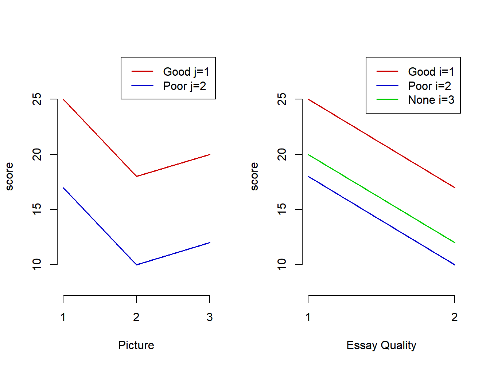
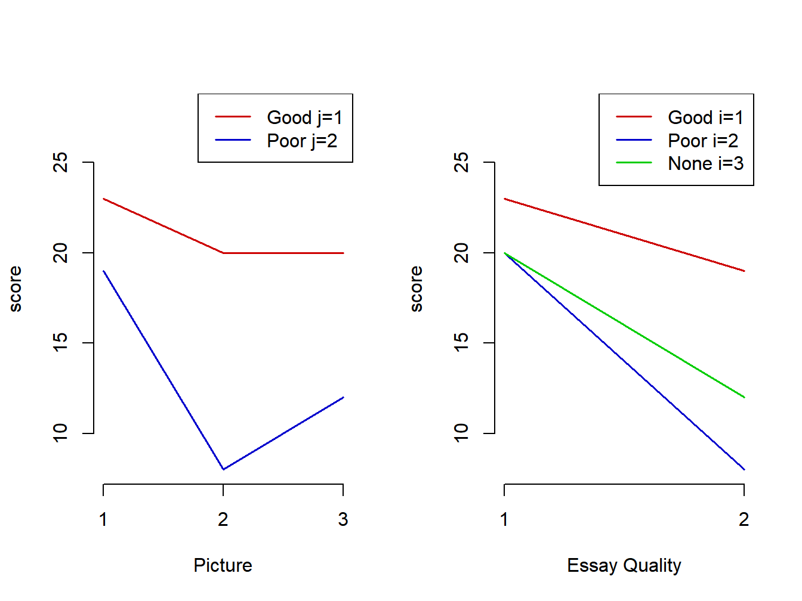
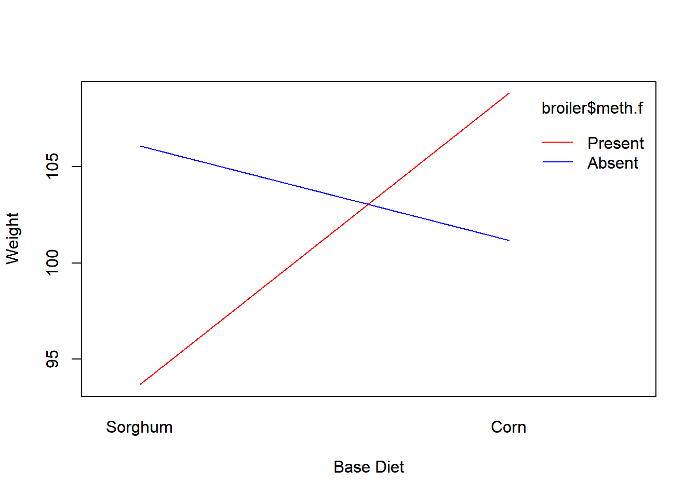
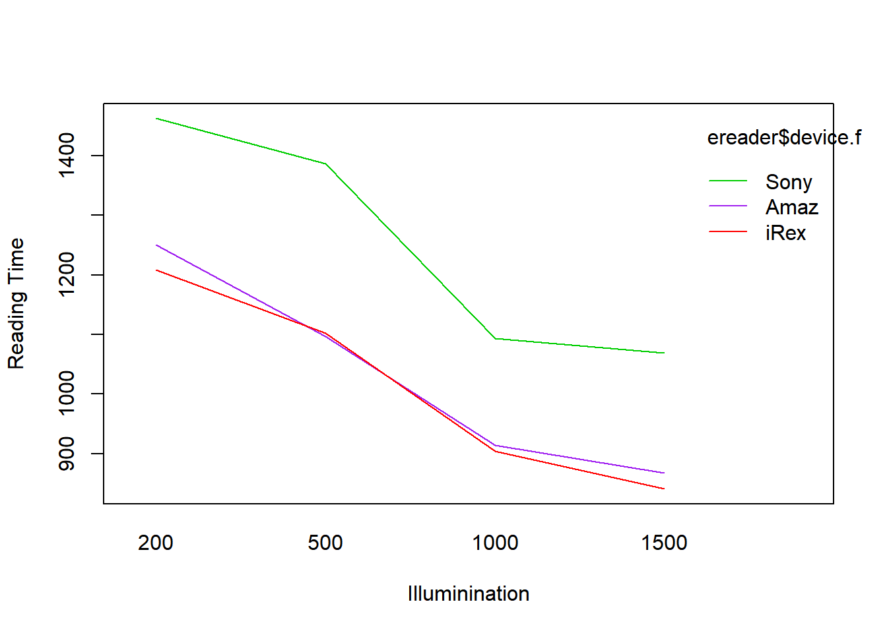
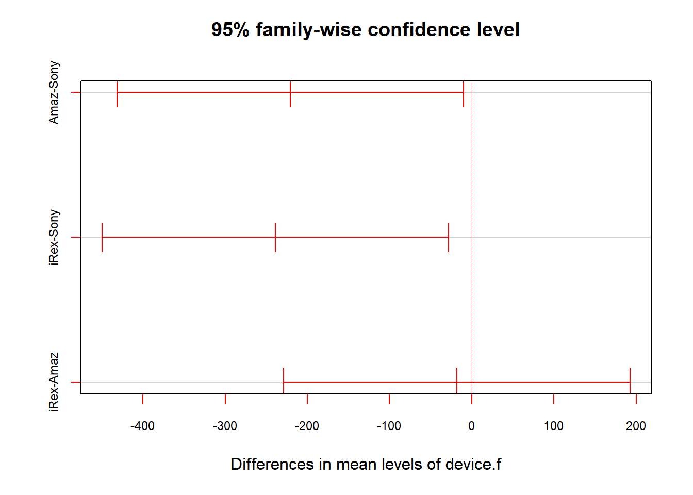
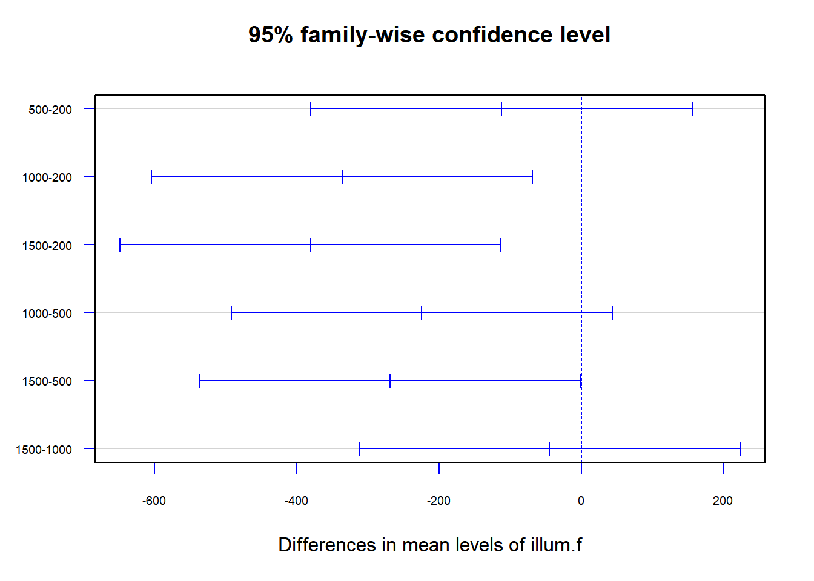

Chapter 6 Balanced Two Factor Designs
In this chapter, we introduce two factor designs with equal numbers of replicates \((n)\) per treatment (factor combination). The factors will be generically labelled as A with \(a\) levels and B with \(b\) levels. The total number of observations is \(n_T=abn\).
6.1 Introduction
In a controlled experiment, experimental units are obtained and randomly assigned to the \(ab\) treatments, with \(n\) units per treatment. In observational studies, \(n\) units are sampled from each of the \(ab\) populations/subpopulations.
The 1-factor-at-a-time method is used in some fields of study. This involves selecting a particular level of factor A and obtain the best level of factor B. Then, at the “best” level of factor B, obtain the best level of factor A. This method has problems, in particular it does not permit studying interactions between the factors. It is best (when feasible) to conduct the experiment at all \(ab\) treatment levels.
We first consider the population mean structures for additive and interaction models based on hypothetical values for an experiment of the “halo effect”.
Example 5.1 - Halo Effect
In this study, researchers were interested in observing the “halo effect” where individuals who are known to be good/bad in a particular dimension and assumed to also be good/bad in another dimension. This phenomenon has been studied involving people, consumer products, and in many other subject areas. This hypothetical data is taken from a psychology experiment where students were given a picture of a student who had written an essay (Good, Bad, No Picture), and an essay that was supposedly written by the student (Good, Poor). The response measured was the score that the student assigned to the essay. Each student rater was assigned to one Picture/Essay Quality condition (Landy and Sigall 1974).
For this example, factor A is the Picture condition with \(a=3\) levels and factor B is Essay quality with \(b=2\) levels. Let \(\mu_{ij}\) be the mean when factor A is at level \(i\) and factor \(B\) is at level \(j\). Further, let \(\mu_{i\bullet}\) be the mean when factor A is at level \(i\) (across levels of factor B) and \(\mu_{\bullet j}\) be the mean when factor B is at level \(j\). Finally \(\mu_{\bullet\bullet}\) is the overall mean across all levels of factors A and B.
Consider the following hypothetical means.
means <- matrix(c(25,18,20,21, 17,10,12,13, 21,14,16,17), ncol=3)
colnames(means) <- c("j=1", "j=2", "Row Mean")
rownames(means) <- c("i=1", "i=2", "i=3", "Col Mean")
means ## j=1 j=2 Row Mean
## i=1 25 17 21
## i=2 18 10 14
## i=3 20 12 16
## Col Mean 21 13 17For the additive effects model, we define the following parameters based on the population means.
\[ \mu_{ij} = \mu_{\bullet\bullet} + \alpha_i + \beta_j \qquad \mbox{ s.t. } \sum_{i=1}^a \alpha_i=\sum_{j=1}^b\beta_j=0 \qquad \mu_{\bullet\bullet}=\frac{1}{ab}\sum_{i=1}^a \sum_{j=1}^b \mu_{ij} \] \[ \mu_{i\bullet} = \frac{1}{b}\sum_{j=1}^b \mu_{ij} = \frac{1}{b}\sum_{j=1}^b \left(\mu_{\bullet\bullet} + \alpha_i + \beta_j\right) =\frac{1}{b}\left[b\mu_{\bullet\bullet} + b\alpha_i + \sum_{j=1}^b\beta_j\right]= \mu_{\bullet\bullet} + \alpha_i \qquad \mu_{\bullet j}=\mu_{\bullet\bullet}+\beta_j \] \[ \alpha_i = \mu_{i\bullet} - \mu_{\bullet\bullet} \qquad \beta_j = \mu_{\bullet j} - \mu_{\bullet\bullet} \qquad \qquad \mu_{\bullet\bullet} = \frac{1}{a}\sum_{i=1}^a\mu_{i\bullet} = \frac{1}{b}\sum_{ij1}^b\mu_{\bullet j} \]
For the halo effect values, we obtain the following parameters.
\[ \alpha_1=\mu_{1\bullet} - \mu_{\bullet\bullet} = 21-17=4 \quad \alpha_2=14-17=-3 \quad \alpha_3=16-17=-1 \qquad \alpha_1+\alpha_2+\alpha_3=0 \] \[ \beta_1 = \mu_{\bullet 1} - \mu_{\bullet\bullet} = 21-17=4 \qquad \beta_2=13-17 = -4 \qquad \beta_1+\beta_2=0 \]
Plots of the means for each cell are given in Figure 6.1. The first plot gives means versus Picture with separate lines for each Essay Quality. The second plot gives means versus Essay Quality with separate lines for each Picture. In both cases lines are parallel, consistent with an additive model. This is an example of an interaction plot (though for these means, there is no interaction).

Figure 6.1: Halo effect means - Interaction plots with additive effects
The effect of Good versus Poor Essay Quality is the same for each Picture condition and the effects of the Picture conditions are the same for each Essay Quality.
Now, consider the following mean structure, consistent with an interaction model.
## j=1 j=2 Row Mean
## i=1 23 19 21
## i=2 20 8 14
## i=3 20 12 16
## Col Mean 21 13 17For the interaction effects model, we define the following parameters based on the population means.
\[ \mu_{ij} = \mu_{\bullet\bullet} + \alpha_i + \beta_j + \left(\alpha\beta\right)_{ij}\qquad \mbox{ s.t. } \sum_{i=1}^a \alpha_i=\sum_{j=1}^b\beta_j=\sum_{i=1}^a\left(\alpha\beta\right)_{ij} = \sum_{j=1}^b\left(\alpha\beta\right)_{ij} =0 \] \[ \left(\alpha\beta\right)_{ij} = \mu_{ij} - \mu_{\bullet\bullet} - \alpha_i - \beta_j =\mu_{ij} - \mu_{\bullet\bullet} - \left(\mu_{i\bullet} - \mu_{\bullet\bullet}\right) -\left(\mu_{\bullet j} - \mu_{\bullet\bullet}\right) = \mu_{ij} - \mu_{i\bullet} - \mu_{\bullet j} + \mu_{\bullet\bullet} \] For the halo effect example, we obtain the following values for the interaction effects.
\[ \left(\alpha\beta\right)_{11} = 23-21-21+17=-2 \qquad \left(\alpha\beta\right)_{12} = 19-21-13+17=2 \] \[ \left(\alpha\beta\right)_{21} = 20-14-21+17=2 \qquad \left(\alpha\beta\right)_{22} = 8-14-13+17=-2 \]
\[ \left(\alpha\beta\right)_{31} = 20-16-21+17=0 \qquad \left(\alpha\beta\right)_{32} = 12-16-13+17=0 \]
Interaction plots are given in Figure 6.2. In this case, the lines are not parallel.

Figure 6.2: Halo effect means - Interaction plots with non-additive effects
\[ \nabla \] In practice, we don’t know the structure of the population means, and must estimate them and make inferences regarding them based on sample data. Before describing the data model, we make a few comments regarding interactions.
- In many situations, the interaction among effects is small relative to main effects and can be ignored.
- Transformations (as in the Box-Cox transformation) can be applied which may remove an interaction.
- In many research settings, interactions may be hypothesized and have interesting theoretical interpretations.
- When factors are ordinal or quantitative, interactions that are synergistic or antagonistic can be observed.
6.2 Two Factor Analysis of Variance
In this section, we describe the 2-factor Analysis of Variance. We will first consider the Cell Means model, where interest is only on the \(ab\) means, typically trying to determine the “best” treatment. Then we consider the Factor Effects model, which measures main effects and interactions among the treatments. In each model, \(Y_{ijk}\) represents a random outcome when factor A is at level \(i\), factor B is at level \(j\), and replicate is \(k\).
6.2.1 Cell Means and Factor Effects Models
In this model, the focus is on the \(ab\) cell means among the combination of levels of factors A and B.
\[ Y_{ijk}=\mu_{ij}+\epsilon_{ijk} \quad i=1,\ldots,a; \quad j=1,\ldots,b; \quad k=1,\ldots,n \quad n_T=abn \]
\[ \mu_{ij} \equiv \mbox{ mean when factor A is at level } i \mbox{ and factor B is at level } j \qquad \epsilon_{ijk}\sim NID\left(0,\sigma^2\right) \]
The model can be written in matrix form with \(Y\) being \(n_T\times 1\), \(X\) being \(n_T \times ab\), \(\beta\) being \(ab \times 1\), and \(\epsilon\) being \(n_T\times 1\). For the case where \(a=b=n=2\), we have the following structure.
\[ Y= \begin{bmatrix} Y_{111} \\Y_{112}\\ Y_{121}\\Y_{122}\\Y_{211}\\Y_{212}\\Y_{221}\\Y_{222}\\ \end{bmatrix} \quad X= \begin{bmatrix} 1 & 0 & 0 & 0 \\ 1 & 0 & 0 & 0\\ 0 & 1 & 0 & 0 \\ 0 & 1 & 0 & 0\\ 0 & 0 & 1 & 0 \\ 0 & 0 & 1 & 0\\ 0 & 0 & 0 & 1 \\ 0 & 0 & 0 & 1\\ \end{bmatrix} \quad \beta= \begin{bmatrix} \mu_{11} \\ \mu_{12} \\ \mu_{21} \\ \mu_{22}\\ \end{bmatrix} \quad \epsilon = \begin{bmatrix} \epsilon_{111} \\\epsilon_{112}\\ \epsilon_{121}\\\epsilon_{122}\\ \epsilon_{211}\\\epsilon_{212}\\\epsilon_{221}\\\epsilon_{222}\\ \end{bmatrix} \]
Under this model, \(V\{Y\}=V\{\epsilon\}=\sigma^2I_{n_T}\).
The Factor Effects model decomposes \(\mu_{ij}\) into main effects among the levels of factors A and B, as well as the interactions among the combinations of levels of factors A and B.
\[ Y_{ijk}=\mu_{\bullet\bullet}+\alpha_i+\beta_j+\left(\alpha\beta\right)_{ij}+\epsilon_{ijk} \quad i=1,\ldots,a;\quad j= 1,\ldots,b; \quad k=1,\ldots,n \]
\[ \mu_{\bullet\bullet}=\frac{1}{ab}\sum_{i=1}^a\sum_{j=1}^b\mu_{ij} \qquad \mu_{i\bullet}=\frac{1}{b}\sum_{j=1}^b\mu_{ij} \qquad \mu_{\bullet j}=\frac{1}{a}\sum_{i=1}^a\mu_{ij} \] \[ \mbox{Main effect of level } i \mbox{ factor A:} \quad \alpha_i = \mu_{i\bullet} - \mu_{\bullet\bullet} \qquad \sum_{i=1}^a \alpha_i=0 \] \[ \mbox{Main effect of level } j \mbox{ factor B:} \quad \beta_j = \mu_{\bullet j} - \mu_{\bullet\bullet} \qquad \sum_{j=1}^b \beta_j=0 \] \[ \mbox{Interaction effect of A at level } i \mbox{ and B at level } j: \quad \left(\alpha\beta\right)_{ij} = \mu_{ij}-\mu_{i\bullet}-\mu_{\bullet j}+\mu_{\bullet\bullet} \] \[ \sum_{i=1}^a\left(\alpha\beta\right)_{ij} = \sum_{j=1}^b\left(\alpha\beta\right)_{ij}=0 \]
\[ Y_{ijk} \sim N\left(\mu_{\bullet\bullet}+\alpha_i+\beta_j+\left(\alpha\beta\right)_{ij},\sigma^2\right) \quad \mbox{independent} \] For the case where \(a=b=n=2\), we have the following structure.
\[ Y= \begin{bmatrix} Y_{111} \\Y_{112}\\ Y_{121}\\Y_{122}\\Y_{211}\\Y_{212}\\Y_{221}\\Y_{222}\\ \end{bmatrix} \quad X= \begin{bmatrix} 1 & \phantom{-}1 & \phantom{-}1 & \phantom{-}1 \\ 1 & \phantom{-}1 & \phantom{-}1 & \phantom{-}1 \\ 1 & \phantom{-}1 & -1 & -1 \\ 1 & \phantom{-}1 & -1 & -1\\ 1 & -1 & \phantom{-}1 & -1 \\ 1 & -1 & \phantom{-}1 & -1\\ 1 & -1 & -1 & \phantom{-}1 \\ 1 & -1 & -1 & \phantom{-}1\\ \end{bmatrix} \quad \beta= \begin{bmatrix} \mu_{\bullet\bullet} \\ \alpha_1 \\ \beta_1 \\ (\alpha\beta)_{11}\\ \end{bmatrix} \quad \epsilon = \begin{bmatrix} \epsilon_{111} \\\epsilon_{112}\\ \epsilon_{121}\\\epsilon_{122}\\ \epsilon_{211}\\\epsilon_{212}\\\epsilon_{221}\\\epsilon_{222}\\ \end{bmatrix} \]
6.2.2 Least Squares/Maximum Likelihood Estimators
First, we define the following means.
\[ \overline{Y}_{ij\bullet} = \frac{1}{n}\sum_{k=1}^nY_{ijk} \quad \overline{Y}_{i\bullet\bullet} = \frac{1}{bn}\sum_{j=1}^b\sum_{k=1}^nY_{ijk} \quad \overline{Y}_{\bullet j \bullet} = \frac{1}{an}\sum_{i=1}^a\sum_{k=1}^nY_{ijk} \] \[ \overline{Y}_{\bullet \bullet \bullet} = \frac{1}{abn}\sum_{i=1}^a\sum_{j=1}^b\sum_{k=1}^nY_{ijk} \]
For the cell means model, the least squares estimator for \(\mu_{ij}\) is simply the sample mean for that cell, \(\overline{Y}_{ij\bullet}\).
\[ Q=\sum_{i=1}^a\sum_{j=1}^b\sum_{k=1}^n\epsilon_{ijk}^2 = \sum_{i=1}^a\sum_{j=1}^b\sum_{k=1}^n\left(Y_{ijk}-\mu_{ij}\right)^2 \quad \frac{\partial Q}{\partial \mu_{ij}}= -2\sum_{k=1}^n\left(Y_{ijk}-\mu_{ij}\right)\]
\[\mbox{Set: } \frac{\partial Q}{\partial \mu_{ij}}=0 \quad \Rightarrow \quad \sum_{k=1}^nY_{ijk}=n\hat{\mu}_{ij} \quad \Rightarrow \quad \hat{\mu}_{ij}=\overline{Y}_{ij\bullet} \] The fitted values and residuals for the cell means model are given below.
\[ \hat{Y}_{ijk}=\hat{\mu}_{ij}=\overline{Y}_{ij\bullet} \qquad e_{ijk}=Y_{ijk}-\hat{Y}_{ijk} = Y_{ijk}-\overline{Y}_{ij\bullet} \]
For the factor effects model, we obtain the following least squares estimators.
\[ Q=\sum_{i=1}^a\sum_{j=1}^b\sum_{k=1}^n \left(Y_{ijk}-\mu_{\bullet\bullet}-\alpha_i-\beta_j-(\alpha\beta)_{ij}\right)^2 \] \[ \frac{\partial Q}{\partial \mu_{\bullet\bullet}}=-2 \sum_{i=1}^a\sum_{j=1}^b\sum_{k=1}^n \left(Y_{ijk}-\mu_{\bullet\bullet}-\alpha_i-\beta_j-(\alpha\beta)_{ij}\right) \quad \mbox{Set } \frac{\partial Q}{\partial \mu_{\bullet\bullet}}=0: \] \[ \quad \Rightarrow \quad \sum_{i=1}^a\sum_{j=1}^b\sum_{k=1}^n Y_{ijk} = abn\hat{\mu}_{\bullet\bullet}+bn\sum_{i=1}^a\alpha_i+an\sum_{j=1}^b\beta_j+ n\sum_{i=1}^a\sum_{j=1}^b(\alpha\beta)_{ij}=abn\hat{\mu}_{\bullet\bullet}+0+0+0 \] \[ \quad \Rightarrow \quad \hat{\mu}_{\bullet\bullet} = \frac{1}{abn} \sum_{i=1}^a\sum_{j=1}^b\sum_{k=1}^n Y_{ijk}= \overline{Y}_{\bullet\bullet\bullet} \] \[ \frac{\partial Q}{\partial \alpha_i}=-2\sum_{j=1}^b\sum_{k=1}^n \left(Y_{ijk}-\mu_{\bullet\bullet}-\alpha_i-\beta_j-(\alpha\beta)_{ij}\right) \quad \mbox{Set } \frac{\partial Q}{\partial \alpha_i}=0 \] \[ \quad \Rightarrow \quad \sum_{j=1}^b\sum_{k=1}^n Y_{ijk} = bn\hat{\mu}_{\bullet\bullet} + bn\hat{\alpha}_i + n\sum_{j=1}^b\beta_j+ n\sum_{j=1}^b(\alpha\beta)_{ij}= bn\overline{Y}_{\bullet\bullet\bullet}+bn\hat{\alpha}_i+0+0 \] \[ \quad \Rightarrow \quad \hat{\alpha}_i = \overline{Y}_{i\bullet\bullet}-\overline{Y}_{\bullet\bullet\bullet} \quad \mbox { by similar argument } \quad \hat{\beta}_j = \overline{Y}_{\bullet j\bullet}-\overline{Y}_{\bullet\bullet\bullet} \] \[ \frac{\partial Q}{\partial (\alpha\beta)_{ij}}=-2\sum_{k=1}^n \left(Y_{ijk}-\mu_{\bullet\bullet}-\alpha_i-\beta_j-(\alpha\beta)_{ij}\right) \quad \mbox{Set } \frac{\partial Q}{\partial (\alpha\beta)_{ij}}=0 \] \[ \quad \Rightarrow \quad \sum_{k=1}^n Y_{ijk} = n\hat{\mu}_{\bullet\bullet} + n\hat{\alpha}_i + n\hat{\beta}_j+ n\hat{(\alpha\beta)}_{ij} \] \[ \quad\Rightarrow\quad \hat{\left(\alpha\beta\right)}_{ij}= \overline{Y}_{ij\bullet} - \overline{Y}_{i\bullet\bullet} -\overline{Y}_{\bullet j \bullet} + \overline{Y}_{\bullet\bullet\bullet} \]
The fitted values and the residuals for the factor effects model are the same as for the cell means model.
\[ \hat{Y}_{ijk}=\hat{\mu}_{\bullet\bullet} + \hat{\alpha}_i +\hat{\beta}_j+\hat{\left(\alpha\beta\right)}_{ij}= \overline{Y}_{ij\bullet} \qquad e_{ijk}=Y_{ijk}-\hat{Y}_{ijk}=Y_{ijk}-\overline{Y}_{ij\bullet} \]
6.2.3 Sums of Squares and the Analysis of Variance
For the cell means model, the 2-Way ANOVA simplifies to a 1-Way ANOVA with \(r=ab\) treatments.
\[ Y_{ijk}-\overline{Y}_{\bullet\bullet\bullet} = \left(Y_{ijk}-\overline{Y}_{ij\bullet}\right)+ \left(\overline{Y}_{ij\bullet}- \overline{Y}_{\bullet\bullet\bullet}\right) \] This identity leads to the sums of squares, as the cross-products sum to zero.
\[ \sum_{i=1}^a\sum_{j=1}^b\sum_{k=1}^n \left(Y_{ijk}-\overline{Y}_{\bullet\bullet\bullet}\right)^2 = \sum_{i=1}^a\sum_{j=1}^b\sum_{k=1}^n \left(Y_{ijk}-\overline{Y}_{ij\bullet}\right)^2 + \sum_{i=1}^a\sum_{j=1}^b\sum_{k=1}^n \left(\overline{Y}_{ij\bullet}- \overline{Y}_{\bullet\bullet\bullet}\right)^2 \]
\[ SSTO=SSE+SSTR \qquad df_{TO}=n_T-1=\left(n_T-ab\right) + \left(ab-1\right)=df_E + df_{TR} \]
For the factor effects model, we decompose the treatment deviations and sums of squares into main effects and interactions among levels of factors A and B.
\[ Y_{ijk}-\overline{Y}_{\bullet\bullet\bullet} = \] \[ \left(Y_{ijk}-\overline{Y}_{ij\bullet}\right) + \left(\overline{Y}_{i\bullet\bullet}- \overline{Y}_{\bullet\bullet\bullet}\right) + \left(\overline{Y}_{\bullet j \bullet}- \overline{Y}_{\bullet\bullet\bullet}\right) + \left(\overline{Y}_{ij\bullet}- \overline{Y}_{i\bullet\bullet} - \overline{Y}_{\bullet j \bullet} + \overline{Y}_{\bullet\bullet\bullet}\right) \]
Again, sums of cross-product terms are zero and we partition the sums of squares as follows.
\[ \sum_{i=1}^a\sum_{j=1}^b\sum_{k=1}^n \left(Y_{ijk}-\overline{Y}_{\bullet\bullet\bullet}\right)^2 = \]
\[ \sum_{i=1}^a\sum_{j=1}^b\sum_{k=1}^n \left(Y_{ijk}-\overline{Y}_{ij\bullet}\right)^2 + \sum_{i=1}^a\sum_{j=1}^b\sum_{k=1}^n \left(\overline{Y}_{i\bullet\bullet}- \overline{Y}_{\bullet\bullet\bullet}\right)^2 + \sum_{i=1}^a\sum_{j=1}^b\sum_{k=1}^n \left(\overline{Y}_{\bullet j \bullet}- \overline{Y}_{\bullet\bullet\bullet}\right)^2 + \]
\[ + \sum_{i=1}^a\sum_{j=1}^b\sum_{k=1}^n \left(\overline{Y}_{ij\bullet}- \overline{Y}_{i\bullet\bullet} - \overline{Y}_{\bullet j \bullet} + \overline{Y}_{\bullet\bullet\bullet}\right)^2 \]
\[ SSTO = SSE + SSA + SSB + SSAB \]
\[ df_{TO}=n_T-1 = \left(n_T-ab\right) + (a-1) + (b-1) + (a-1)(b-1)= \] \[ =df_E + df_A + df_B + df_{AB} \]
For the factor effects model, we summarize the following sums of squares, degrees of freedom, and expected mean squares.
\[ \mbox{Factor A:} \quad SSA=bn\sum_{i=1}^a \left(\overline{Y}_{i\bullet\bullet}- \overline{Y}_{\bullet\bullet\bullet}\right)^2 \qquad df_A=a-1 \qquad MSA=\frac{SSA}{a-1} \] \[ E\{MSA\}=\sigma^2+\frac{bn\sum_{i=1}^a\alpha_i^2}{a-1} \]
\[ \mbox{Factor B:} \quad SSB=an\sum_{j=1}^b \left(\overline{Y}_{\bullet j \bullet}- \overline{Y}_{\bullet\bullet\bullet}\right)^2 \qquad df_B=b-1 \qquad MSB=\frac{SSB}{b-1} \] \[ E\{MSB\}=\sigma^2+\frac{an\sum_{j=1}^b\beta_j^2}{b-1} \]
\[ \mbox{AB Interaction:} \quad SSAB=n\sum_{i=1}^a\sum_{j=1}^b \left(\overline{Y}_{ij\bullet}- \overline{Y}_{i\bullet\bullet} - \overline{Y}_{\bullet j \bullet} + \overline{Y}_{\bullet\bullet\bullet}\right)^2 \] \[ df_{AB}=(a-1)(b-1) \qquad MSAB=\frac{SSAB}{(a-1)(b-1)} \]
\[ E\{MSAB\}=\sigma^2 + \frac{n\sum_{i=1}^a\sum_{j=1}^b(\alpha\beta)_{ij}^2}{(a-1)(b-1)} \]
\[ \mbox{Error:} \quad SSE= \sum_{i=1}^a\sum_{j=1}^b\sum_{k=1}^n \left(Y_{ijk}-\overline{Y}_{ij\bullet}\right)^2 \qquad df_E=ab(n-1)=n_T-ab \] \[ MSE=\frac{SSE}{ab(n-1)} \qquad E\{MSE\}=\sigma^2 \]
When working with published results, the error sum of squares can be obtained from the treatment standard deviations as in the 1-Way ANOVA.
\[ SSE=\sum_{i=1}^a\sum_{j=1}^b\sum_{k=1}^n \left(Y_{ijk}-\overline{Y}_{ij\bullet}\right)^2= (n-1)\sum_{i=1}^a\sum_{j=1}^bs_{ij}^2 \]
When testing for the effects of the factors, begin with a test for interaction, then test for main effects. If the interaction is important, the tests for the main effects may be deceiving, as the effects of factors A and B depend of the level of the other factor.
The test for interaction is given here.
\[ H_0^{AB}:\left(\alpha\beta\right)_{11}=\cdots =\left(\alpha\beta\right)_{ab}=0 \qquad H_A^{AB}: \mbox{ Not all } \left(\alpha\beta\right)_{ij}=0 \]
\[ \mbox{Test Statistic:} \quad F_{AB}^*=\frac{MSAB}{MSE} \qquad \mbox{Rejection Region:} \quad F_{AB}^* \ge F_{1-\alpha;(a-1)(b-1),ab(n-1)} \]
The tests for the main effects of factors A and B are conducted as follow.
\[ H_0^A: \alpha_1 = \cdots = \alpha_a=0 \qquad H_A^A: \mbox { Not all } \alpha_i=0 \]
\[ \mbox{Test Statistic:} \quad F_{A}^*=\frac{MSA}{MSE} \qquad \mbox{Rejection Region:} \quad F_{A}^* \ge F_{1-\alpha;a-1,ab(n-1)} \]
\[ H_0^B: \beta_1 = \cdots = \beta_b=0 \qquad H_A^B: \mbox { Not all } \beta_j=0 \]
\[ \mbox{Test Statistic:} \quad F_{B}^*=\frac{MSB}{MSE} \qquad \mbox{Rejection Region:} \quad F_{B}^* \ge F_{1-\alpha;b-1,ab(n-1)} \]
Effect sizes for the main effects and interaction can be obtained from the sums of squares in the Analysis of Variance. The effect size \(\eta^2\) is obtained by dividing each sum of squares by the total sum of squares. Partial \(\eta^2\) is obtained by dividing each sum of squares by the sum of it and the error sum of squares.
\[ \eta_A^2 = \frac{SSA}{SSTO} \qquad \qquad \eta_B^2 = \frac{SSB}{SSTO} \qquad \qquad \eta_{AB}^2=\frac{SSAB}{SSTO} \]
\[ \mbox{Partial-} \eta_A^2 = \frac{SSA}{SSA+SSE} \qquad \mbox{Partial-} \eta_B^2 = \frac{SSB}{SSA+SSE} \qquad \mbox{Partial-} \eta_{AB}^2 = \frac{SSAB}{SSAB+SSE} \qquad \]
Example 5.2 - Drumstick Weights of Broiler Chickens
A study was conducted to compare weights of chicken parts under 4 diets (Aksu, Imik, and Karoglu 2007). The 4 diets were combinations of two factors, each with two levels \((a=b=2)\). Factor A was base diet (Sorghum \((i=1)\) and Corn \((i=2)\)). Factor B was methionine supplement (Absent \((j=1)\) and Present \((j=2)\)). There were \(n=60\) chickens receiving each diet for a total of \((n_T=abn=2(2)(60)=240)\).
The observed means and standard deviations for the diets are given below. We will use five decimal places to reduce rounding differences with the R output
\[ \overline{y}_{11\bullet}=106.07983 \quad \overline{y}_{12\bullet}=93.67017 \quad \overline{y}_{21\bullet}=101.16983 \quad \overline{y}_{22\bullet}=108.82967 \]
\[ s_{11}=15.04009 \quad s_{12}=12.28969 \quad s_{21}=16.74029 \quad s_{22}=20.92978 \] Here we compute the marginal means for each level of factors A and B, as well as the overall mean, and then obtain least squares estimates and the Analysis of Variance.
\[ \overline{y}_{1\bullet\bullet}=\frac{106.07983+93.67017}{2}=99.87500 \quad \overline{y}_{2\bullet\bullet}=\frac{101.16983+108.82967}{2}=104.99975 \] \[ \overline{y}_{\bullet 1 \bullet}=\frac{106.07983+101.16983}{2}=103.62483 \quad \overline{y}_{\bullet 2 \bullet}=\frac{93.67017+108.82967}{2}=101.24992 \] \[ \overline{y}_{\bullet\bullet\bullet}=\frac{106.07983+93.67017+101.16983+108.82967}{4}= 102.437375 \] The main effect and interacion effects are computed from the means above.
\[ \hat{\alpha}_1=99.87500-102.437375=-2.562375 \quad \hat{\alpha}_2=104.99975-102.437375=2.562375 \]
\[ \hat{\beta}_1=103.62483-102.437375=1.187455 \quad \hat{\beta}_2=101.24992-102.4375=-1.187455 \]
\[ \hat{(\alpha\beta)}_{11}=106.07983-99.87500-103.62483+102.437375=5.017375 \]
\[ \hat{(\alpha\beta)}_{12}=93.67017-99.87500-101.24992+102.437375=-5.017375 \]
\[ \hat{(\alpha\beta)}_{21}=101.16983-104.99975-103.62483+102.437375=-5.017375 \]
\[ \hat{(\alpha\beta)}_{22}=108.82967-104.99975-101.24992+102.437375=5.017375 \]
Next, we compute the sums of squares, making use of the estimated effects for \(SSA\), \(SSB\), and \(SSAB\).
\[ SSA=bn\sum_{i=1}^a\hat{\alpha}_i^2 = 2(60)\left[(-2.562375)^2+(2.562375)^2\right]=1575.78375 \] \[ df_A=2-1 \qquad MSA=1575.78375 \]
\[ SSB=an\sum_{j=1}^b\hat{\beta}_j^2 = 2(60)\left[(1.187455)^2+(-1.187455)^2\right]=338.41185 \] \[ df_B=2-1 \qquad MSB=338.41185 \] \[ SSAB=n\sum_{i=1}^a\sum_{j=1}^b\hat{(\alpha\beta)}_{ij}^2 = \] \[ 60\left[(5.017375)^2+(-5.017375)^2+(-5.017375)^2+(5.017375)^2\right] =6041.77245 \] \[ df_{AB}=(2-1)(2-1)=1 \qquad MSAB=6041.77245 \]
\[ SSE=(n-1)\sum_{i=1}^a\sum_{j=1}^bs_{ij}^2= 59\left[(15.04009)^2+(12.28969)^2+(16.74029)^2+(20.92978)^2\right]=64636.49347 \]
\[ df_E=2(2)(60-1)=236 \qquad MSE=273.88345 \]
First, test for an interaction between base diet and methionine supplement.
\[ H_0^{AB}: (\alpha\beta)_{11} = \cdots = (\alpha\beta)_{22} = 0 \]
\[ \mbox{Test Statistic:} \quad F_{AB}^*=\frac{MSAB}{MSE}=\frac{6041.77245}{273.88345} = 22.060 \] \[ \mbox{Rejection Region:} \quad F_{AB}^* \ge F_{.95;1,236}=3.881 \qquad P=P\left(F_{1,236}\ge 22.060\right) < .0001 \]
As there is strong evidence of an interaction (adding methionine has a large negative effect when sorghum is used, and has a large positive effect when corn is used), we will conduct the main effects test for completeness.
\[ H_0^A: \alpha_1 = \alpha_2=0 \qquad H_A^A: \mbox { Not all } \alpha_i=0 \]
\[ \mbox{Test Statistic:} \quad F_{A}^*= \frac{MSA}{MSE}=\frac{1575.78375}{273.88345}=5.753 \]
\[ \mbox{Rejection Region:} \quad F_{A}^* \ge F_{.95;1,236}=3.881 \qquad P=P\left(F_{1,236}\ge 5.753\right)=.0172 \]
\[ H_0^B: \beta_1 = \beta_2=0 \qquad H_A^B: \mbox { Not all } \beta_j=0 \]
\[ \mbox{Test Statistic:} \quad F_{B}^*=\frac{MSB}{MSE}=\frac{338.41185}{273.88345} =1.236 \]
\[ \mbox{Rejection Region:} \quad F_{A}^* \ge F_{.95;1,236}=3.881 \qquad P=P\left(F_{1,236}\ge 1.236\right)=.2674 \]
The test for factor A is significant (Corn does better marginally than Sorghum). The test for factor B is not significant (marginally Methionine Absent and Present give similar results). This last result is mis-leading as Methionine has a large positve effect for Corn (7.66 gram increase) but a large negative effect for Sorghum (12.41 gram decrease), so marginally they “cancel out.”
The effect sizes and partial effect sizes for the base diet, methionine, and their interaction are obtained below, along with the total sum of squares.
\[ SSTO=SSA+SSB+SSAB+SSE=1575.94+338.44+6445.58+64636.75=72996.71 \]
\[ \eta_A^2=\frac{1575.94}{72996.71}=0.0216 \qquad \eta_B^2=\frac{338.44}{72996.71}=0.0046 \qquad \eta_{AB}^2=\frac{6445.58}{72996.71}=0.0883 \] \[ \mbox{Partial-} \eta_A^2=\frac{1575.94}{1575.94+64636.75}=0.0238 \qquad \mbox{Partial-} \eta_B^2=\frac{338.44}{338.44+64636.75}=0.0052 \] \[ \mbox{Partial-} \eta_{AB}^2=\frac{6445.58}{6445.58+64636.75}=0.0907 \]
The interaction has a much larger effect size than either of the main effects. Based on \(\eta_{AB}^2\), approximately 9% of the total variance is attributable to the interaction.
The following R code uses the aov function. As before, we set the options to have the effects sum to zero.
## diet base methionine drumStkWt
## 1 1 1 1 116.33
## 2 1 1 1 99.43broiler$base.f <- factor(broiler$base, levels=1:2,
labels=c("Sorghum", "Corn"))
broiler$meth.f <- factor(broiler$meth, levels=1:2,
labels=c("Absent", "Present"))
interaction.plot(broiler$base.f, broiler$meth.f, broiler$drumStkWt,
xlab="Base Diet", ylab="Weight",
col=c("blue", "red"), lty=c(1,1))
options(contrasts=c("contr.sum","contr.poly"))
ds.mod1 <- aov(drumStkWt ~ base.f*meth.f, data=broiler)
summary.lm(ds.mod1)##
## Call:
## aov(formula = drumStkWt ~ base.f * meth.f, data = broiler)
##
## Residuals:
## Min 1Q Median 3Q Max
## -59.16 -10.94 0.78 9.58 57.21
##
## Coefficients:
## Estimate Std. Error t value Pr(>|t|)
## (Intercept) 102.437 1.068 95.892 < 2e-16 ***
## base.f1 -2.562 1.068 -2.399 0.0172 *
## meth.f1 1.187 1.068 1.112 0.2674
## base.f1:meth.f1 5.017 1.068 4.697 4.49e-06 ***
## ---
## Signif. codes: 0 '***' 0.001 '**' 0.01 '*' 0.05 '.' 0.1 ' ' 1
##
## Residual standard error: 16.55 on 236 degrees of freedom
## Multiple R-squared: 0.1096, Adjusted R-squared: 0.09828
## F-statistic: 9.683 on 3 and 236 DF, p-value: 4.731e-06## Analysis of Variance Table
##
## Response: drumStkWt
## Df Sum Sq Mean Sq F value Pr(>F)
## base.f 1 1576 1575.8 5.7535 0.01723 *
## meth.f 1 338 338.4 1.2356 0.26745
## base.f:meth.f 1 6042 6041.8 22.0596 4.488e-06 ***
## Residuals 236 64636 273.9
## ---
## Signif. codes: 0 '***' 0.001 '**' 0.01 '*' 0.05 '.' 0.1 ' ' 1## # Effect Size for ANOVA (Type I)
##
## Parameter | η² (partial) | 95% CI
## -------------------------------------------
## base.f | 0.02 | [0.00, 1.00]
## meth.f | 5.21e-03 | [0.00, 1.00]
## base.f:meth.f | 0.09 | [0.04, 1.00]
##
## - One-sided CIs: upper bound fixed at [1.00].## # Effect Size for ANOVA (Type I)
##
## Parameter | η² | 95% CI
## ---------------------------------------
## base.f | 0.02 | [0.00, 1.00]
## meth.f | 4.66e-03 | [0.00, 1.00]
## base.f:meth.f | 0.08 | [0.04, 1.00]
##
## - One-sided CIs: upper bound fixed at [1.00].\[ \nabla \]
Example 5.3 - Reading Times on Electronic Readers
Next, consider a study that compared \(a=3\) electronic reader models, each at \(b=4\) illuminance levels (Chang, Chou, and Shieh 2013). The three reader models are described as follows.
- Sony PRS 700 - 6” diagonal screen size \((i=1)\)
- Amazon Kindle DX - 9.7” diagonal screen size \((i=2)\)
- iRex 1000S - 10.2” diagonal screen size \((i=3)\)
The illuminance levels studied were 200 lx \((j=1)\), 500 lx \((j=2)\), 1000 lx \((j=3)\), and 1500 lx \((j=4)\). A total study group of \(n_T=60\) subjects was obtained with \(n=5\) being measured on the \(ab=3(4)=12\) combinations of device and illumination level. The response variable \(Y\) is the reading time in seconds.
R code and output are given below.
## device illum readTime
## 1 1 1 1656.26
## 2 1 1 1405.92ereader$device.f <- factor(ereader$device, levels=1:3,
labels=c("Sony", "Amaz", "iRex"))
ereader$illum.f <- factor(ereader$illum, levels=1:4,
labels=c("200", "500", "1000", "1500"))
interaction.plot(ereader$illum.f, ereader$device.f, ereader$readTime,
xlab="Illuminination", ylab="Reading Time",
col=c("green3", "purple", "red"), lty=c(1,1,1))
## 200 500 1000 1500
## Sony 1462.158 1385.960 1093.694 1069.49
## Amaz 1250.188 1096.594 914.006 868.01
## iRex 1208.350 1102.146 904.400 841.10options(contrasts=c("contr.sum", "contr.poly"))
ereader.mod1 <- aov(readTime ~ device.f*illum.f, data=ereader)
summary.lm(ereader.mod1)##
## Call:
## aov(formula = readTime ~ device.f * illum.f, data = ereader)
##
## Residuals:
## Min 1Q Median 3Q Max
## -497.41 -187.20 -20.66 206.88 463.53
##
## Coefficients:
## Estimate Std. Error t value Pr(>|t|)
## (Intercept) 1099.675 35.601 30.889 < 2e-16 ***
## device.f1 153.151 50.347 3.042 0.00380 **
## device.f2 -67.475 50.347 -1.340 0.18649
## illum.f1 207.224 61.663 3.361 0.00153 **
## illum.f2 95.225 61.663 1.544 0.12909
## illum.f3 -128.975 61.663 -2.092 0.04179 *
## device.f1:illum.f1 2.108 87.204 0.024 0.98081
## device.f2:illum.f1 10.765 87.204 0.123 0.90227
## device.f1:illum.f2 37.909 87.204 0.435 0.66572
## device.f2:illum.f2 -30.831 87.204 -0.354 0.72523
## device.f1:illum.f3 -30.157 87.204 -0.346 0.73099
## device.f2:illum.f3 10.781 87.204 0.124 0.90212
## ---
## Signif. codes: 0 '***' 0.001 '**' 0.01 '*' 0.05 '.' 0.1 ' ' 1
##
## Residual standard error: 275.8 on 48 degrees of freedom
## Multiple R-squared: 0.3771, Adjusted R-squared: 0.2343
## F-statistic: 2.641 on 11 and 48 DF, p-value: 0.01001## Analysis of Variance Table
##
## Response: readTime
## Df Sum Sq Mean Sq F value Pr(>F)
## device.f 2 706968 353484 4.6483 0.0142790 *
## illum.f 3 1481064 493688 6.4920 0.0008906 ***
## device.f:illum.f 6 21543 3591 0.0472 0.9995253
## Residuals 48 3650203 76046
## ---
## Signif. codes: 0 '***' 0.001 '**' 0.01 '*' 0.05 '.' 0.1 ' ' 1## Tukey multiple comparisons of means
## 95% family-wise confidence level
##
## Fit: aov(formula = readTime ~ device.f * illum.f, data = ereader)
##
## $device.f
## diff lwr upr p adj
## Amaz-Sony -220.6260 -431.5285 -9.723488 0.0384849
## iRex-Sony -238.8265 -449.7290 -27.923988 0.0230557
## iRex-Amaz -18.2005 -229.1030 192.702012 0.9762840## Tukey multiple comparisons of means
## 95% family-wise confidence level
##
## Fit: aov(formula = readTime ~ device.f * illum.f, data = ereader)
##
## $illum.f
## diff lwr upr p adj
## 500-200 -111.9987 -379.9852 155.9878183 0.6838249
## 1000-200 -336.1987 -604.1852 -68.2121817 0.0085849
## 1500-200 -380.6987 -648.6852 -112.7121817 0.0023697
## 1000-500 -224.2000 -492.1865 43.7864849 0.1306514
## 1500-500 -268.7000 -536.6865 -0.7135151 0.0491639
## 1500-1000 -44.5000 -312.4865 223.4864849 0.9708523

## # Effect Size for ANOVA (Type I)
##
## Parameter | η² (partial) | 95% CI
## ----------------------------------------------
## device.f | 0.16 | [0.02, 1.00]
## illum.f | 0.29 | [0.10, 1.00]
## device.f:illum.f | 5.87e-03 | [0.00, 1.00]
##
## - One-sided CIs: upper bound fixed at [1.00].## # Effect Size for ANOVA (Type I)
##
## Parameter | η² | 95% CI
## ------------------------------------------
## device.f | 0.12 | [0.00, 1.00]
## illum.f | 0.25 | [0.07, 1.00]
## device.f:illum.f | 3.68e-03 | [0.00, 1.00]
##
## - One-sided CIs: upper bound fixed at [1.00].Unlike the chicken broilers example, there is no evidence (whatsoever) of a significant interaction between device and illumination level \(F_{AB}^*=0.0472\), \(P_{AB}=.9995\). There is evidence of device differences \(F_A^*=4.648\), \(P_A=.0143\) and illumination differences \(F_B^*=6.492\), \(P_B=.0009\).
The residual standard error, which estimates \(\sigma\), is 275.8 seconds, a little over 4.5 minutes. The variation in people’s reading times (within treatments) is quite large. Based on \(\eta^2\), the illumination levels explains 25% of the total variation in reading times, while device explains 12%.
Based on Tukey comparisons among devices and among illumination levels we obtain the following significant differences. Formulas will be given in the next section.
- The larger Amazon and iRex readers have significantly lower reading times than the smaller Sony model.
- 1000 lx and 1500 lx have significantly lower reading times than 200 lx
- 1500 lx has significantly lower reading times than 500 lx
\[ \nabla \]
Finally, some guidelines are given for testing and modelling strategy.
If the interaction is significant, and the goal was to demonstrate interactions (as is often the case in behavioral studies), describe the interaction effects in terms of cell means, as in the Chicken Diet example. If the interaction is significant, and the goal is to simplify the model, try some power (Box-Cox) transformations on \(Y\) and see if that simplifies the model.
If the interaction isn’t significant or important, test for main effects for factors A and B. Also, make comparisons among the marginal means of factors A and B, as in the E-reader example.
6.3 Factor Effect Contrasts
In this section, we consider contrasts among means when interaction is absent and when it is present.
6.3.1 Contrasts when there is No Interaction
This is the simpler case, where contrasts are made among levels of factors A and B, as was done previously for single factor models.
For contrasts among levels for factor A, we summarize the results from the 1-Way ANOVA. Keep in mind that the marginal means for the levels of factor A are based on \(an\) levels.
\[ \mbox{Contrasts among Factor A Levels:} \quad L=\sum_{i=1}^a c_i\mu_{i\bullet} \qquad \sum_{i=1}^a c_i=0 \]
\[ \mbox{Estimator:} \quad \hat{L}=\sum_{i=1}^a c_i\overline{Y}_{i\bullet\bullet} \qquad \mbox{Standard Error:} \quad \hat{SE}\left\{\hat{L}\right\}=\sqrt{\frac{MSE}{bn}\sum_{i=1}^a c_i^2} \]
\[ (1-\alpha)100\% \mbox{ Confidence Interval for }L: \quad \hat{L} \pm t_{1-\alpha/2; ab(n-1)} \hat{SE}\left\{\hat{L}\right\} \]
\[ \mbox{Scheffe (all contrasts):}\quad \hat{L} \pm \left(\sqrt{(a-1)F_{1-\alpha;a-1,ab(n-1)}}\right) \hat{SE}\left\{\hat{L}\right\} \]
\[ \mbox{Bonferroni (} g \mbox{ pre-planned) contrasts:} \quad \hat{L} \pm t_{1-\alpha/(2g); ab(n-1)} \hat{SE}\left\{\hat{L}\right\} \] \[ \mbox{Tukey (All pairs):} \quad \hat{L} \pm \frac{q_{1-\alpha; a, ab(n-1)}}{\sqrt{2}} \hat{SE}\left\{\hat{L}\right\} \] Similar results for factor B occur, with the following adjustments, as well as critical values for Scheffe’s and Tukey’s methods.
\[ L=\sum_{j=1}^b c_j\mu_{\bullet j} \qquad \sum_{j=1}^b c_j=0 \qquad \hat{L}=\sum_{j=1}^b c_j\overline{Y}_{\bullet j \bullet} \qquad \hat{SE}\left\{\hat{L}\right\}=\sqrt{\frac{MSE}{an}\sum_{j=1}^b c_j^2} \]
6.3.2 Contrasts when Interaction is Present
In this case, contrasts are made among cell means as opposed to marginal means.
\[ \mbox{Contrasts:} \quad L=\sum_{i=1}^a\sum_{j=1}^bc_{ij}\mu_{ij} \qquad \sum_{i=1}^a\sum_{j=1}^bc_{ij}=0 \]
\[ \mbox{Estimator:} \quad \hat{L}=\sum_{i=1}^a\sum_{j=1}^b c_{ij}\overline{Y}_{ij\bullet} \qquad \mbox{Std Error:} \quad \hat{SE}\left\{\hat{L}\right\}= \sqrt{\frac{MSE}{n}\sum_{i=1}^a\sum_{j=1}^b c_{ij}^2} \]
\[ (1-\alpha)100\% \mbox{ Confidence Interval for }L: \quad \hat{L} \pm t_{1-\alpha/2; ab(n-1)} \hat{SE}\left\{\hat{L}\right\} \]
\[ \mbox{Scheffe (all contrasts):}\quad \hat{L} \pm \left(\sqrt{(ab-1)F_{1-\alpha;ab-1,ab(n-1)}}\right) \hat{SE}\left\{\hat{L}\right\} \]
\[ \mbox{Bonferroni (g pre-planned) contrasts:} \quad \hat{L} \pm t_{1-\alpha/(2g); ab(n-1)} \hat{SE}\left\{\hat{L}\right\} \] \[ \mbox{Tukey (All pairs):} \quad \hat{L} \pm \frac{q_{1-\alpha; ab, ab(n-1)}}{\sqrt{2}} \hat{SE}\left\{\hat{L}\right\} \]
## Warning: package 'additivityTests' was built under R version 4.5.3